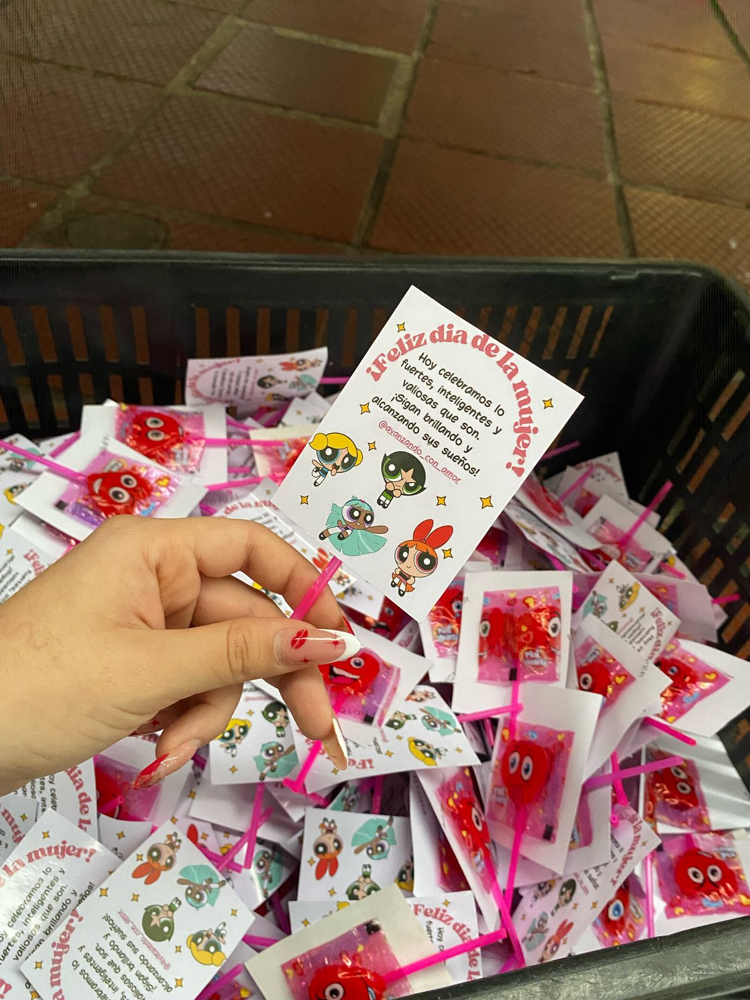
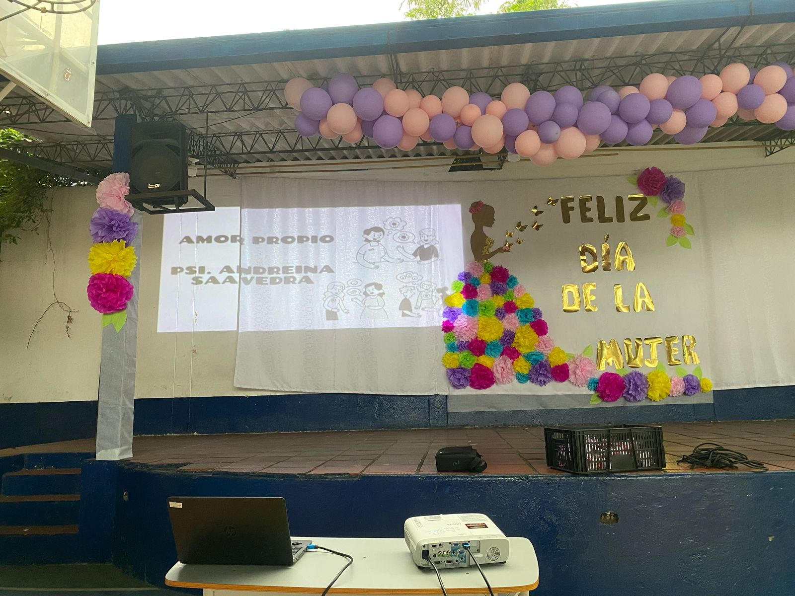
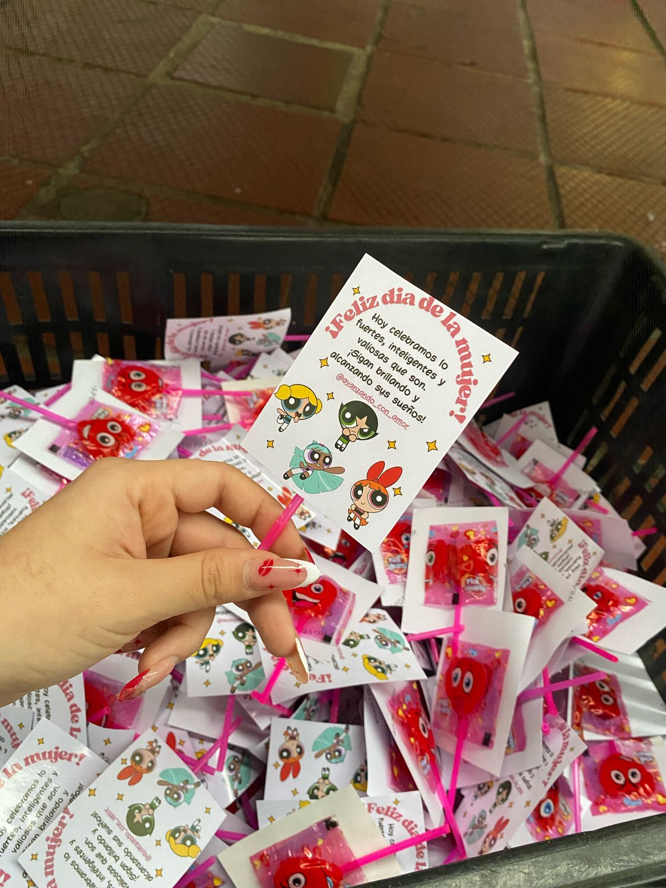
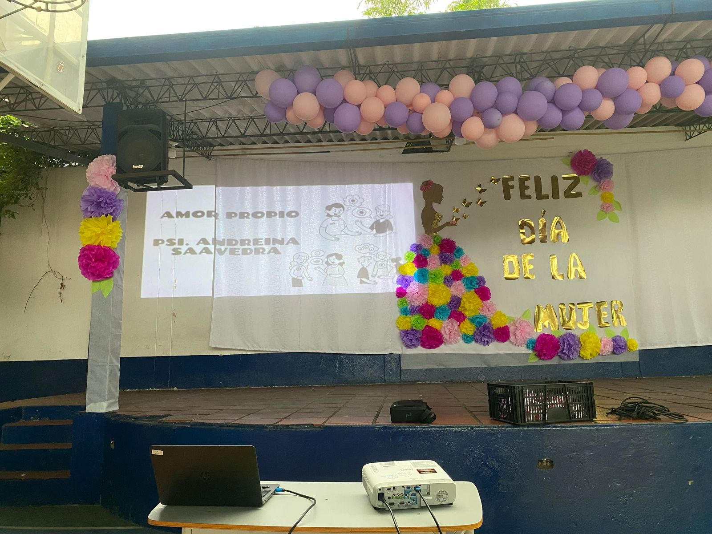

Un camino hacia el amor propio
En el marco de la conmemoración del Día de la Mujer, junto a la psicologa Andreina Saavedra, realizamos una conferencia que se convirtió en un espacio de reflexión y crecimiento personal. A través de diferentes actividades trabajamos el amor propio y la autoestima, recordando que ambos son pilares fundamentales para reconocer nuestro valor y fortalecer nuestra identidad. Cada dinámica nos invitó a mirarnos con empatía, a valorar nuestras capacidades y a entender que amarnos no significa ser perfectas, sino aceptarnos y priorizarnos con respeto y dignidad. Más allá de celebrar una fecha, fue una oportunidad para compartir, escucharnos y reafirmar la fuerza que cada mujer lleva dentro.
Las imágenes reflejan su participación, la interacción con el grupo y los momentos en los que compartimos reflexiones muy valiosas para nuestro crecimiento personal. Además, se realizó una entrega de detalles a todas las niñas, como muestra de cariño y reconocimiento por su presencia y entusiasmo durante la actividad.